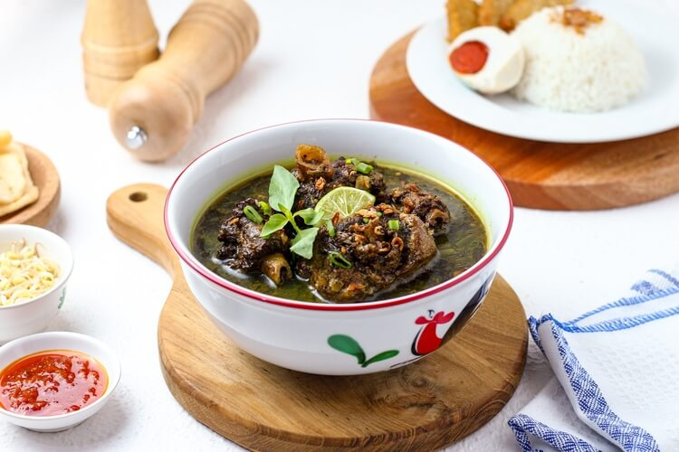
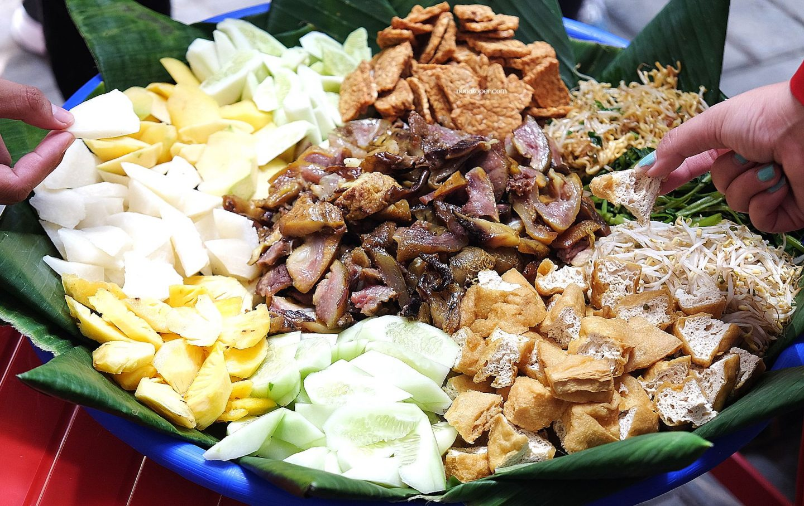
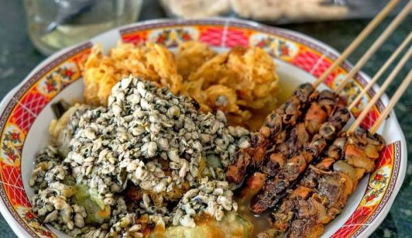

Surabaya Local Food
Rawon
Rawon is a famous beef soup with a rich, dark broth. Its unique color and deep savory flavor come from the keluwek nut, a fermented nut used as the main seasoning. In Surabaya, rawon is typically served with warm rice, a handful of fresh bean sprouts, and a sprinkle of fried shallots.
Rujak Cingur
One of Surabaya's most iconic dishes. This salad consists of blanched vegetables like water spinach and bean sprouts. What makes it special is the addition of cingur, which is boiled cow snout, all drizzled with a thick sauce made from petis, peanuts, palm sugar, and chili.
Tahu Campur

Its main ingredients include fried tofu cut into pieces, steamed rice cake (lontong), yellow noodles, fresh lettuce, and bean sprouts. What makes Tahu Campur truly special is the addition of tender boiled beef and lentho, a fried fritter made from cowpeas, all swimming in a savory and thick beef broth seasoned with spices.
Lontong Kupang
It consists of kupang, a type of small clams, which are boiled and served with sliced rice cakes (lontong), clam satay, and lentho. All of these ingredients are drenched in a savory clam broth, then finished with a squeeze of lime juice and a dollop of petis chili sauce, creating a unique blend of sweet, savory, and refreshing flavors.